Kevoree for the impatient
The Kevoree Browser Runtime is still under active development; expect things to break randomly :-) Please provide feedback (issue on GitHub), if it breaks
You want to see something running fast...ok
Open the Kevoree Browser Runtime
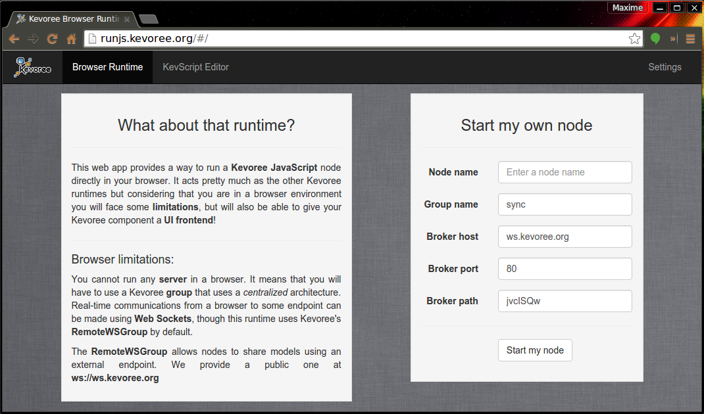
To start a new node, juste enter a Node name (eg. "browser") in the first input on the right and then click on Start my node
At that point, your current browser tab is acting as a Kevoree runtime running a default KevScript that contains a JavascriptNode and a RemoteWSGroup
After a few time, you should see the logs:
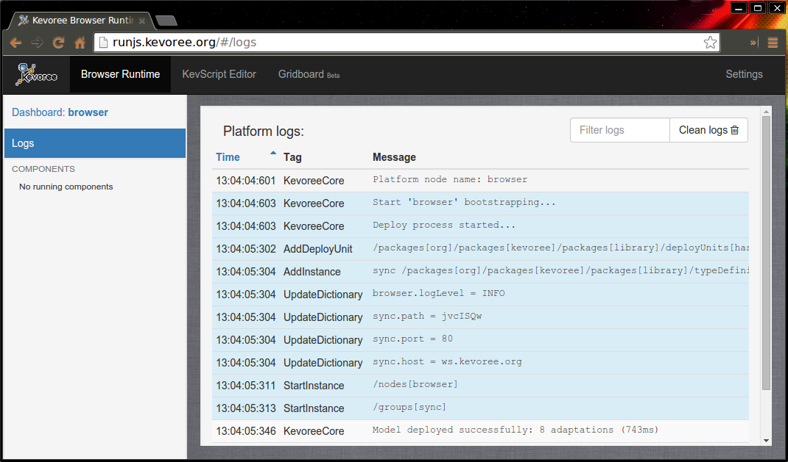
Click on the Dashboard item in the left panel to display general informations about your runtime
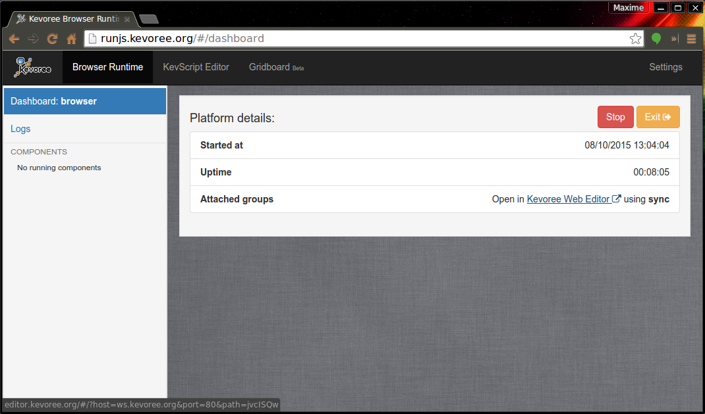
You should now see a link to the Kevoree Web Editor that as been built using your current model.
Follow this link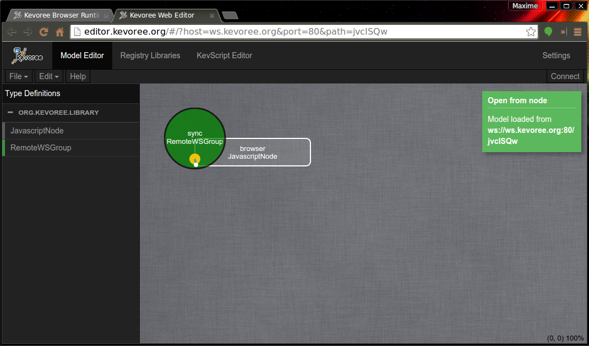
You can see that by giving some query parameters to the Web Editor URL you can automatically trigger an Open From Node on start-up.
This model is the abstraction of your currently running Kevoree runtime at http://runjs.kevoree.org on the other tab
The point of the Kevoree Web Editor is to provide an easy way to manage your model@runtime and then deploy it. In this tutorial, we will just add two components and a channel by using the KevScript language:
// copy/paste this in the KevScript Editor in Kevoree Web Editor add browser.ticker: Ticker add browser.chart: Chart add chan: LocalChannel set browser.ticker.random = 'true' set browser.ticker.period = '500' set browser.chart.xLimit = '10' bind browser.ticker.tick chan bind browser.chart.input chan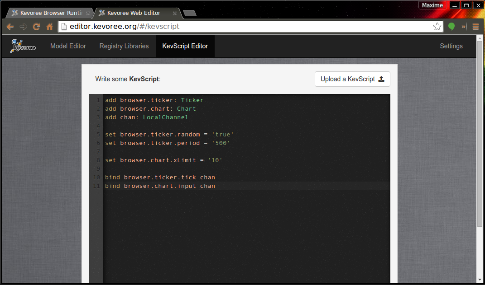
Then click on Merge and you will see this:
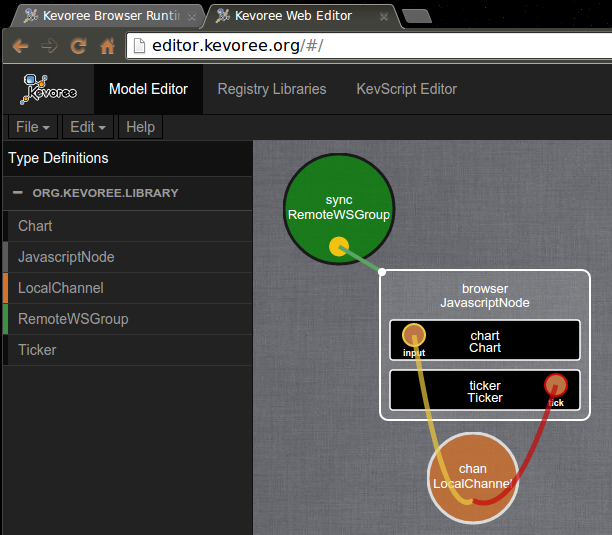
The next step, is to send this new model to your running system. To do so, in Kevoree, you use the Groups (ie. the green circles).
Select the group "sync", this will open the instance panel on the right. At the bottom of this panel there is a Push/Pull model button, click it.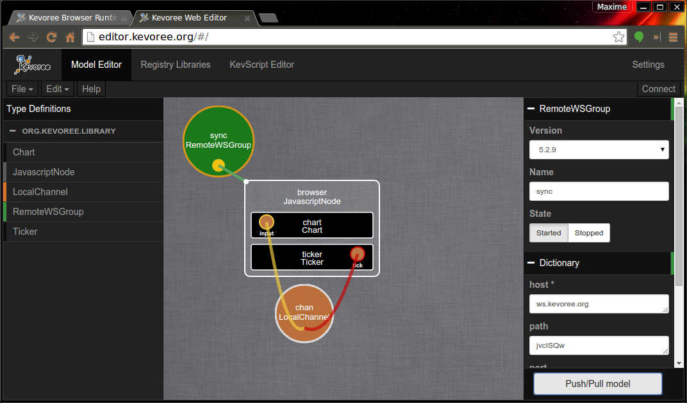
Select where you want to send your new model:
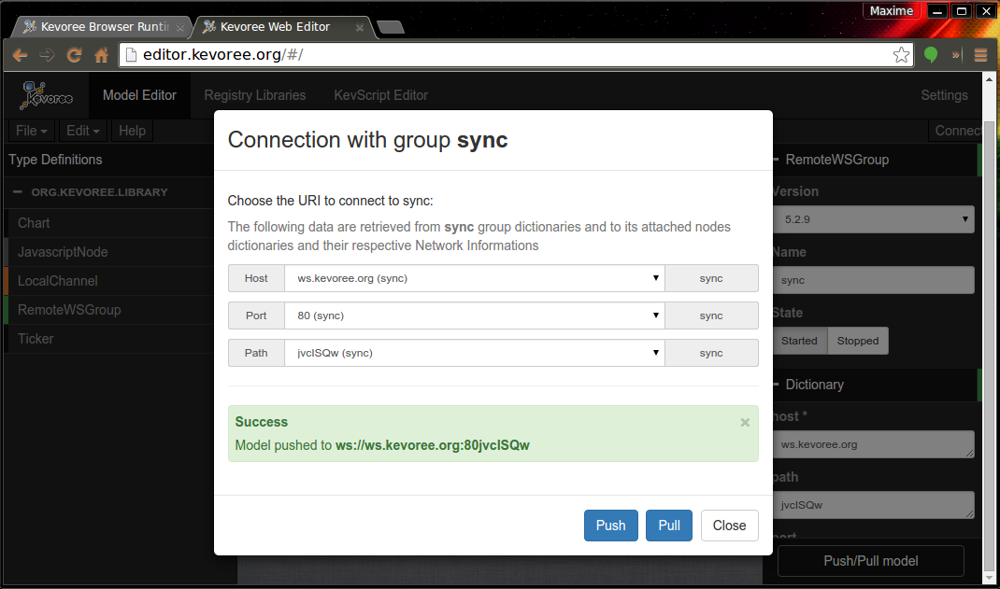
Because we use the RemoteWSGroup by default, you are given a pseudo unique ID. It should be displayed in the Path list. Just select:
- host: ws.kevoree.org
- port: 80
- path: your pseudo unique id (eg. "jvclSQw" in the example)
And then Push your model.
Back to the Kevoree Browser Runtime tab, you can witness model@runtime adaptations
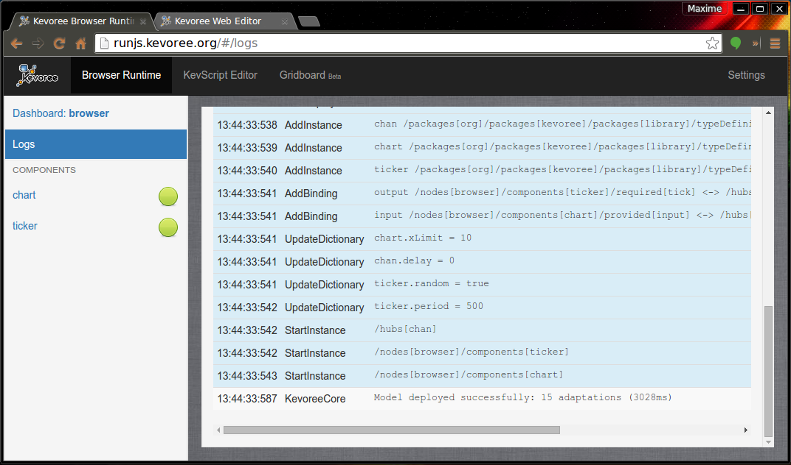
Go to the Gridboard Beta page, and you will see a grid of all the running components UIs
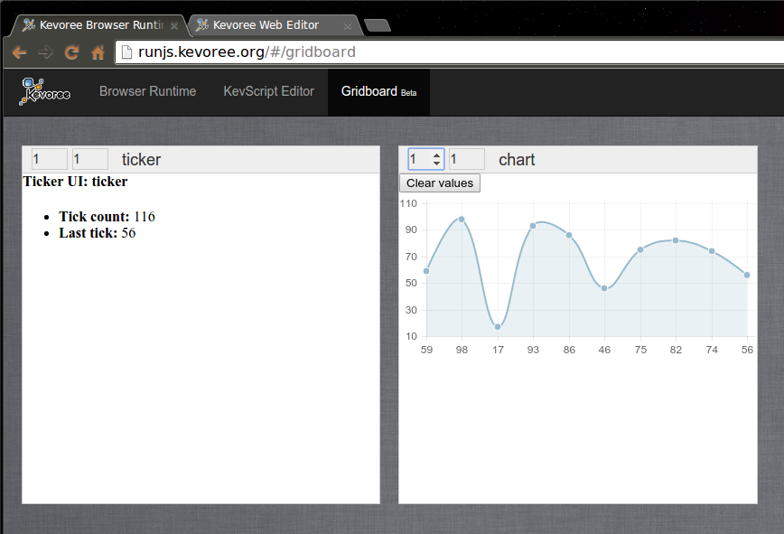
Yay.
You want to develop your own component, here is a short tutorial to install a development environment
- Install JDK8
- Install IntelliJ IDE
- Install Kevoree Plugin in IntelliJ (
Preferences > Plugins > Browser repositories > Kevoree > Install) - Restart IntelliJ
- Create an Empty Kevoree Project (
File > New Project > Kevoree > ok) 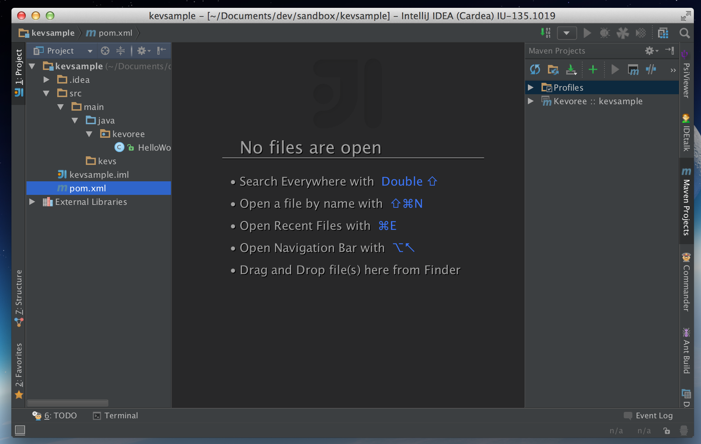 - Update the version of Kevoree to desired one

- Refresh maven project if necessary

- Ok, you should see a demo component
HelloWorld.java
- Create a KevScript file in
src/kevs
- Right click and run it 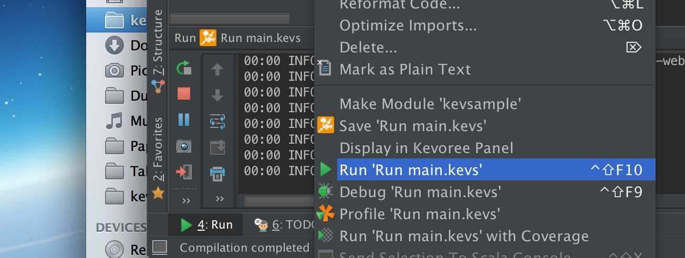
- Open Kevoree editor and load the current model (
File > Open from nodeand leave everything by default) - Now edit the KevScript file and add the line:
add node0.hello : HelloWorld - Run it again, and reload the model. You should see the new component inside the node.

- Now add another HelloWord component using drag and drop and push the new model

- You sould see a message saying that your component has been pushed.
Now feel free to modify the hello world, to connect it to several using default library of channels and so on...